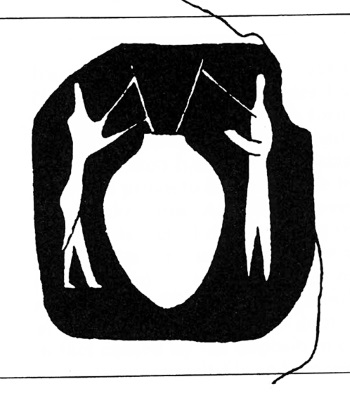
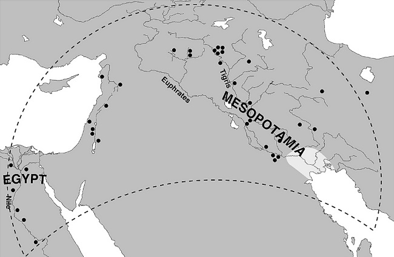

История в бокалах . Пиво каменного века.


Брожение и цивилизация неразделимы.
Пинта предыстории
Первая волна миграции из Африки началась примерно 50 тысяч лет тому назад. Люди кочевали небольшими группами, охотились на дичь, ловили рыбу и моллюсков, собирали съедобные растения. Жили в пещерах, хижинах или палатках из кожи животных, перемещаясь из одного временного лагеря в другой, чтобы использовать сезонные запасы продовольствия. Их орудиями были луки со стрелами и рыболовные крючки. Так продолжалось тысячелетия. Но примерно 12 тысяч лет назад жизненный уклад населения Ближнего Востока радикально изменился.
Охотники и собиратели занялись сельским хозяйством и поселились в деревнях, которые впоследствии превратились в первые города. Так называемая неолитическая революция привела к созданию средств производства и новых технологий: появились гончарные изделия, колесные транспортные средства и письменные принадлежности.
С тех пор как в Африке около 150 тысяч лет назад появились «анатомически современные» люди, или Homo sapiens, основным напитком человечества была вода. Живительная влага определяет возможность существования и саму жизнь на Земле. Но с переходом к оседлому образу жизни люди стали полагаться на новый напиток, приготовленный из ячменя и пшеницы, первых зерновых культур, которые они научились культивировать.
Этот напиток, а речь идет о пиве, был основным продуктом самых ранних цивилизаций и сыграл важнейшую роль в социальной, религиозной и экономической жизни.
Когда было сварено первое пиво, точно не известно. Можно утверждать, что не ранее 10 000 года до н. э. Но уже к 4000 году до н. э. оно было широко распространено на Ближнем Востоке. Первое документальное свидетельство – пиктограмма с изображением двух человек, пьющих пиво через тростниковые соломинки из большого глиняного кувшина – обнаружено в Месопотамии, на территории современного Ирака. (На поверхности древнего пива плавали зерна и мякина, поэтому его пили через соломинку.)
В 3400 году до н. э. в Месопотамии появилась письменность, но самые ранние документы не проливают свет на историю происхождения пива. Ясно, однако, что его распространение тесно связано с культивированием злаков, из которых его производили, и развитием сельского хозяйства. Пиво появилось в бурный период истории человечества, оно стало свидетелем перехода от кочевого к оседлому образу жизни, за которым последовало усложнение социального контура человеческой организации, наиболее ярко проявившееся в появлении городов. Эта жидкая историческая реликвия была свидетелем и участником зарождения человеческой цивилизации.

На пиктограмме из кости тюленя, найденной в Тепе Гавре (Месопотамия, около 4000 года до н. э.), изображены люди, пьющие пиво через соломинки из большого глиняного кувшина
Открытие пива
Пиво не изобретали, пиво открывали. Это открытие было неизбежно, как только после окончания последнего ледникового периода, около 10 000 года до н. э., на территории Плодородного полумесяца стал возможен сбор злаков. Этот регион простирается от современного Египта, побережья Средиземного моря, до юго-восточной части Турции, а затем к границе между Ираком и Ираном.
Плодородный полумесяц предоставил кочующим группам охотников-собирателей возможность не только охотиться на диких овец, коз и свиней, но и собирать зерна диких злаков, которые росли здесь в изобилии.

Плодородный полумесяц, регион Ближнего Востока, где люди впервые занялись сельским хозяйством и создали крупные поселения (обозначены точками)
Зерна пшеницы и ячменя, непригодные для употребления в пищу в сыром виде, измельчали, вымачивали в глиняных чанах, а затем смешивали с различными ингредиентами, рыбой, орехами и ягодами. В эту смесь, вероятно похожую на суп, опускали предварительно нагретые камни. Горячие зерна лопались, выделявшийся крахмал делал «суп» густым.
Вскоре было замечено еще одно необычное свойство злаков. В отличие от других продуктов, они могли храниться в сухом виде месяцами или даже годами. Кроме «супа» из них можно было приготовить кашу, отвар, тонкую лепешку. Это открытие стало стимулом для создания новых инструментов и усовершенствования технологии сбора, обработки и хранения зерна, что потребовало немалых усилий, но позволило избежать голода в неурожайные года. В ходе археологических раскопок на территории Плодородного полумесяца были обнаружены серпы из кремня для сбора зерна, плетеные корзины для его транспортировки, каменные очаги для сушки, подземные ямы для хранения и точильные камни для обработки инструментов. Все эти артефакты датируются примерно 10 000 годом до н. э.
Хотя охотники-собиратели вели полукочевой образ жизни, передвигаясь между временными и сезонными убежищами, возможность и умение сохранять зерно побуждали людей оставаться на одном месте. Почему? Археологи провели эксперимент, чтобы выяснить, насколько эффективен был сбор диких злаков, которые все еще растут в некоторых частях Турции. За один час с помощью кремневого серпа было собрано более двух фунтов зерна. Это значит, что семья, работая по восемь часов в течение трех недель, могла запастись зерном на целый год, при этом на каждого члена семьи приходилось по фунту в день. Разумеется, добиться этого можно было, только оставаясь около «плантаций» диких злаков, чтобы не упустить подходящее время для сбора урожая, а затем не оставлять его без присмотра.
В результате около 10 000 года до н. э. возникли первые постоянные поселения, например на восточном побережье Средиземного моря. Они состояли из простых круглых хижин с крышами на деревянных столбах-опорах, очагом и каменным полом. В типичной деревне из пятидесяти хижин проживала община из двухсот или трехсот человек. Хотя жители таких деревень продолжали охотиться на диких животных (газелей, оленей и кабанов), антропологические исследования свидетельствуют о преимущественно растительном рационе, включавшем желуди, чечевицу, нут и злаки, которые на этом этапе все еще собирали в дикой природе, а не культивировали специально.
Довольно скоро люди обратили внимание на два удивительных свойства зерна. Во-первых, было замечено, что замоченное зерно начинает прорастать и становится сладким на вкус. Это стало очевидным, как только были построены первые «зернохранилища» – ямы для хранения зерна трудно было сделать водонепроницаемыми. Причина этой сладости теперь понятна: увлажненное зерно производит диастазные ферменты, которые превращают крахмал в мальтозный сахар или солод. (Этот процесс присущ всем зерновым культурам, но ячмень в этом смысле рекордсмен.) Поскольку в то время соложеное зерно было основным источником сахара, были разработаны специальные методы соложения, при которых зерно сначала вымачивалось, а затем высушивалось.
Второе открытие было еще более значительным. Оставленная «без присмотра» кашица, особенно сделанная из соложеного зерна, претерпевала таинственные изменения: она слегка пенилась и приятно опьяняла, так как дикие дрожжи превращали сахар в кашице в спирт. Короче, кашица превращалась в пиво.
Это не означает, что пиво было первым алкогольным напитком, который попробовал человек. Он давно оценил вкус забродившего фруктового сока и воды с медом – это неизбежно происходило при попытке сохранять фрукты или мед. Но фрукты – продукт сезонный и скоропортящийся, а дикий мед был доступен в ограниченных количествах, да и вино, и медовуха не могли храниться долго вне керамических сосудов, которые появились не ранее 6000 года до н. э.
Пиво же можно было приготовить в любом количестве – зерно было в изобилии и хорошо хранилось. Задолго до того, как появилась керамика, пиво можно было варить в корзинах с дном, выложенным перьями, в кожаных бурдюках или желудках животных, в выдолбленных стволах деревьев, в больших раковинах или каменных сосудах. Раковины использовали для приготовления пищи даже в XIX веке в бассейне Амазонки, а сахти, традиционное финское пиво, и сегодня, как в старину, варят в выдолбленных стволах деревьев.
После того как было сделано решающее открытие, качество пива в результате многочисленных проб и ошибок постоянно улучшалось. Например, было замечено, что чем больше соложеного зерна в кашице и чем дольше процесс брожения, тем крепче становится пиво. Больше солода – больше сахара, дольше брожение – больше сахара превращается в спирт. Тщательное приготовление кашицы также повышает крепость пива. Процесс соложения превращает в сахар около 15 процентов крахмала, содержащегося в зернах ячменя, но когда соложеный ячмень смешивается с водой и доводится до кипения, в дело вступают другие ферменты. Активизируясь под воздействием высоких температур, они превращают больше крахмала в сахар, который дрожжи смогут переработать в спирт.
Древние пивовары также заметили, что использование одной и той же емкости для пивоварения дает более надежные результаты. Записи, обнаруженные археологами в Египте и Месопотамии, показывают, что пивовары всегда носили с собой собственные «месильные бадьи», а один месопотамский миф рассказывает о чудесных чанах, «которые делают пиво хорошим». Повторное использование одной и той же емкости способствовало успешной ферментации – дрожжи селились в трещинах, и пивоварам не приходилось полагаться на более капризные дикие дрожжи. Наконец, добавление различными способами ягод, меда, специй, трав и других приправ меняло вкус напитка. В течение последующих тысячелетий люди научились готовить разнообразные сорта пива для разных случаев.
В египетских летописях упоминается по меньшей мере семнадцать сортов пива, описание которых напоминает современные рекламные слоганы: «прекрасное», «небесное», «приносящее радость», «обильное», «плотное». Было и специальное пиво для религиозных церемоний. Ранние письменные свидетельства о пиве из Месопотамии (III тысячелетие до н. э.) содержат названия более двадцати различных видов: свежее, темное, свежее темное, крепкое, красно-коричневое, легкое, прессованное. Красно-коричневое – это темное пиво с повышенным содержанием солода, а прессованное, более слабое и водянистое, – с пониженным. Месопотамские пивовары могли контролировать вкус и цвет своего пива, добавляя в различных дозах баппир (пивной хлеб) или другое пиво. Чтобы приготовить баппир, ячмень из пророщенного зерна прессовали в маленькие буханки, которые запекали дважды, чтобы получился темно-коричневый хрустящий пресный хлеб. Он мог годами ждать того момента, когда пивовар опустит его в чан.
Летописи свидетельствуют, что баппир хранили на государственных складах и употребляли в пищу только в случае нехватки продовольствия. Это был не столько пищевой продукт, сколько удобный способ хранения сырья для приготовления пива.
У археологов нет единого мнения насчет использования месопотамского хлеба в пивоварении. По одной версии, вначале было пиво, по другой – хлеб. Наиболее вероятно, что первые хлеб и пиво были получены из кукурузы. Густую кашицу можно было запекать на солнце или на горячем камне, а жидкую пить. Это были разные стороны одной медали: хлеб был густым пивом, а пиво – жидким хлебом.
Под влиянием пива?
Поскольку письменности в то время еще не было, отсутствуют свидетельства, подтверждающие социальную и ритуальную роль пива на территории Плодородного полумесяца в каменном веке или в период неолита между 9000 и 4000 годом до н. э.
Источником информации служат более поздние записи о том, как пиво использовалось первыми грамотными цивилизациями, шумерами из Месопотамии и древними египтянами. Именно в то время зарождаются прочные культурные традиции, связанные с пивом. Некоторые из них живы и по сей день.
На шумерских изображениях, датируемых III тысячелетием до н. э., два человека пьют пиво через соломинку из общего сосуда. А ведь шумеры уже умели отфильтровывать зерна и мякину и изготавливать керамические сосуды. Почему же пиво не подавали в отдельных чашах? Можно предположить, что это был своего рода ритуал, символ гостеприимства и дружбы, который сохранился даже тогда, когда соломинки были больше не нужны. Гости, пьющие пиво из одного сосуда с хозяином, могли быть уверены, что оно не испорчено или, хуже того, не отравлено.
Таким образом, древнее пиво, сваренное в примитивном сосуде, объединяло просто фактом своего существования. И хотя сегодня не принято предлагать соломинку, чтобы выпить чаю, кофе или вина, привычка чокаться символически воссоединяет содержимое бокалов в единый сосуд. Это традиция с очень древними корнями.
В древности бытовало мнение, что напитки, в особенности алкогольные, обладают сверхъестественными свойствами. Для человека неолита способность пива опьянять, вызывая состояние измененного сознания, казалась магической. Это и сделало брожение, превращающее обычную кашу в пиво, таинством. А дальше очевидный вывод – пиво было подарком богов. Соответственно, во многих культурах существуют мифы, объясняющие, как боги изобрели пиво и затем поделились этим знанием с человечеством. Египтяне, например, полагали, что пиво случайно обнаружил Осирис, бог сельского хозяйства и владыка загробного мира. Однажды он залил проросшее зерно водой и забыл об этом, а когда вспомнил, обнаружил, что смесь, оставленная на солнце, забродила. Попробовал и был настолько доволен результатом, что поделился этим знанием с человечеством. (Похоже, эта история о том, как на самом деле было изобретено пиво.) Другие пивные культуры хранят похожие истории.
И поскольку пиво подарок богов, логично его использование в религиозных обрядах, посвященных урожаю, в похоронных церемониях у шумеров и египтян. Эта традиция характерна для каждой «пивной» культуры, будь то Америка, Африка или Евразия. Инки посвящали свое пиво (чичу) восходящему солнцу, разливая его из золотой чашки, или сплевывали первый глоток в качестве приношения богам Земли; а пиво ацтеков (пульке) служило приношением Майяуэль, богине плодородия. В Китае пиво из проса и риса пили на похоронах. Традиция поднимать бокал, чтобы пожелать кому-то здоровья, счастливого брака, успешного завершения проекта или безопасного перехода в загробную жизнь, – это современное эхо древней идеи о том, что алкоголь обладает особыми «божественными» правами.
Пиво и сельское хозяйство, семена современности
Некоторые ученые предполагают, что пиво могло сыграть решающую роль в возникновении сельского хозяйства. Этот поворотный момент в истории человечества подготовил почву для развития цивилизации. Создание запасов продовольствия освободило людей от необходимости ежедневно заботиться о хлебе насущном, позволило осваивать и развивать ремесла. Это произошло сначала в том самом Плодородном полумесяце: примерно с 9000 года до н. э. люди стали выращивать ячмень и пшеницу, а не просто собирать дикие злаки для потребления и хранения.
Конечно, переход от охоты и собирательства к земледелию был постепенным и занял несколько тысяч лет, но насчет того, почему, как и когда это произошло, до сих пор существует множество теорий. Возможно, количество продуктов, доступных охотникам-собирателям в Плодородном полумесяце, уменьшилось, например из-за изменения климата или из-за того, что некоторые виды растений и животных вымерли или были истреблены. Другая гипотеза заключается в том, что менее подвижный образ жизни земледельца повышал фертильность, население росло, а вместе с ним и спрос на новые источники питания. В конечном счете специально возделываемые культуры стали играть все более важную роль в питании человечества.
Или, может быть, изобретение пива, его социальная и ритуальная роль стали стимулом для развития цивилизованного земледелия, которое обеспечивало стабильный урожай зерна. Разумеется, приписывать переход к сельскохозяйственной деятельности исключительно пиву было бы преувеличением. Beроятно, это всего лишь один из многих факторов, повлиявших на переход от кочевого к оседлому образу жизни. И как только процесс пошел, сработал эффект храповика. Чем большую роль играло сельское хозяйство в процессе производства продуктов питания для общины, тем интенсивнее росло население и тем труднее было вернуться к кочевому образу жизни, в основе которого лежали охота и собирательство.
Употребление пива способствовало переходу к сознательному земледелию еще и по другой возможной причине. Поскольку долгосрочное хранение пива было затруднительным, а полное брожение занимает до недели, значительную часть выпивали намного раньше. Такое незрелое пиво с относительно низким содержанием алкоголя по современным стандартам было богато взвешенными дрожжами, что значительно повышало содержание белка и витамина В. Высокий уровень витамина В в пиве, в частности, компенсировал сокращение потребления мяса, обычного источника этого витамина для охотников и собирателей.
Кроме того, поскольку для приготовления пива использовали кипяченую воду, напиток был безопаснее воды, постоянно загрязняемой отходами человеческой жизнедеятельности даже в самых маленьких поселениях. Хотя о связи между загрязненной водой и плохим здоровьем тогда не знали, люди с опаской относились к незнакомым источникам воды. Охотников-собирателей эта проблема не волновала, поскольку они жили маленькими мобильными группами и постоянно переезжали с места на место. Другими словами, пиво помогло компенсировать снижение качества продуктов питания. Употребляющие пиво земледельцы получали жизненное преимущество перед теми, кто пил обычную воду.
Между 7000 и 5000 годом до н. э. сельское хозяйство распространилось по всей территории Плодородного полумесяца, так как число одомашненных растений и животных (овец и коз) возрастало, а новые методы орошения сделали возможным земледелие на жарких сухих низменностях Месопотамии и долины Нила в Египте.
Типичная деревня этого периода состояла из хижин, построенных из глины и тростниковых плит, и, возможно, нескольких довольно больших домов из обожженных на солнце кирпичей. За деревней были поля, где выращивались злаки, финики и другие культуры, а овцы и волы содержались поблизости. Дикая птица, рыба и другая доступная дичь дополняли рацион. Это был совсем другой образ жизни по сравнению с периодом охоты и собирательства всего несколько тысяч лет назад.
В поселениях этого периода были оборудованы большие помещения для хранения ценных вещей, в частности предметов культа, а также продуктовых запасов общины. Сохранение излишков продовольствия было одним из способов предотвратить возможный дефицит в будущем, а ритуальные церемонии – «убедить» богов обеспечить хороший урожай. В результате излишки пищи становились подношением богам, а хранилища – храмами.
Доля, внесенная каждым жителем деревни в «общак», регистрировалась с помощью небольших глиняных жетонов, которые археологи находили на территории Плодородного полумесяца. Эти взносы считались религиозными приношениями священникам-администраторам, которые жили за счет излишков продовольствия и управляли такими общественно важными проектами, как строительство зданий и содержание ирригационных систем. Таким образом, в начале VIII тысячелетия до н. э. были заложены основы бухгалтерского учета, письма и бюрократии.
Предположение, что пиво послужило толчком для столь радикального изменения характера человеческой деятельности после тысяч лет охоты и собирательства, остается спорным. Но исключительное значение пива для первых великих цивилизаций несомненно. И хотя происхождение этого древнего напитка окутано тайной и домыслами, нет сомнений, что повседневная жизнь египтян и месопотамцев, молодых и старых, богатых и бедных, была буквально погружена в пиво.